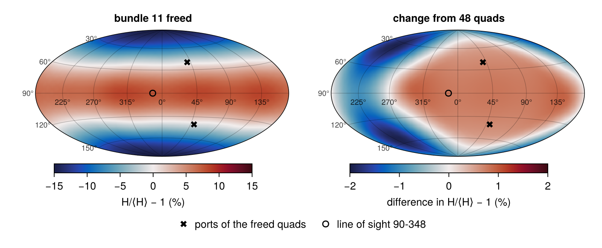
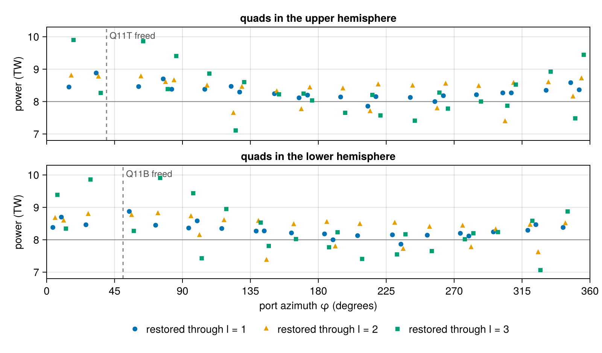
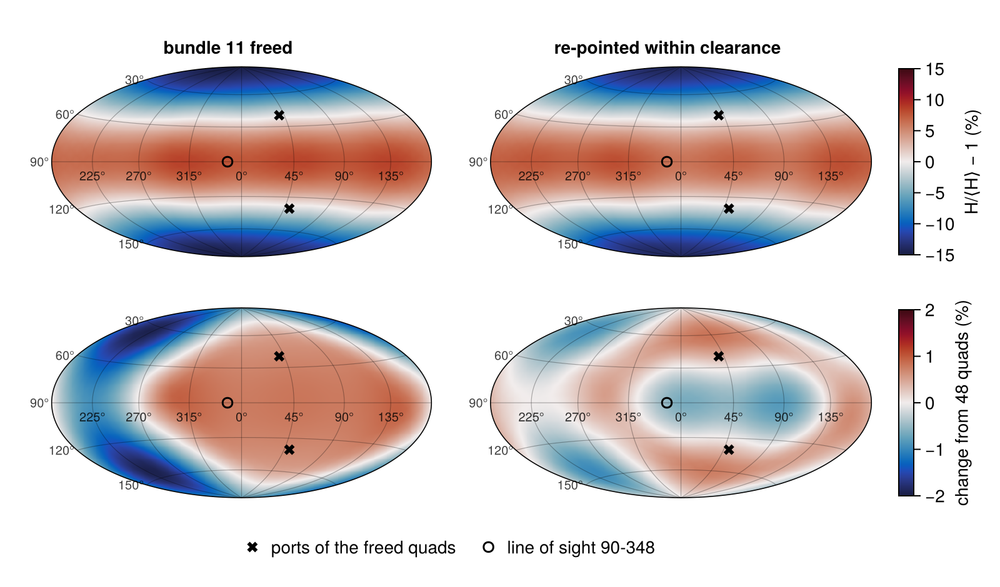

Freeing a bundle for radiography
A radiograph of an imploding capsule needs a backlighter, and on NIF the backlighter's lasers come out of the drive. Freeing one bundle (two quads of four beams, one quad in each hemisphere, sharing an amplifier chain) leaves 46 quads to drive the hohlraum, and the capsule sees the asymmetry of the missing ports. On a layered DT ignition shot there is little margin for it. A mode-1 asymmetry of the drive, a flux difference between opposite sides of the capsule, pushes the hot spot sideways at about 100 km/s for each percent of mode-1 flux (MacGowan et al., High Energy Density Physics 40, 100944, 2021), and the drive itself is the scarcest resource of the shot.
Which bundle can be freed is set first by the radiograph: its quads must reach a backlighter foil placed across the target from the detector, perpendicular to the line of sight, without their light touching the hohlraum or its entrance-hole shields on the way, and the foil's x rays must reach the detector unobstructed. This tutorial finds the bundles that can serve each of two equatorial lines of sight, ranks them by the symmetry they cost, and compares three ways to win that symmetry back: freeing the bundle's symmetric partner as well, rebalancing the powers of the remaining quads, and re-pointing them within the clearance the entrance holes allow. It introduces three-dimensional mode analysis with real spherical harmonics, the symmetry of the NIF ports, scenarios on a subset of the beams, the influence matrix, optimization with automatic-differentiation gradients, and beam-clearance checks.
using Briareus
using CairoMakie
using LinearAlgebra
using Printf
CairoMakie.activate!(type = "png", px_per_unit = 2)
include(joinpath(pkgdir(Briareus), "docs", "literate", "_plotting.jl")) # figure helperscutaway! (generic function with 1 method)Modes on the capsule
Expand the incident flux on the capsule in real spherical harmonics,
\[H(\theta, \phi) = \sum_{l, m} c_{lm}\, Y_{lm}(\theta, \phi),\]
where $Y_{lm}$ with $m > 0$ varies as $\cos m\phi$ and with $m < 0$ as $\sin |m|\phi$; $Y_{11}$ points along $+x$ and $Y_{1,-1}$ along $+y$. flux_ylm returns the coefficients, in the order of mode_index. The size of mode $l$ relative to the mean is
\[\epsilon_l = \frac{1}{c_{00}}\sqrt{(2l + 1)\sum_m c_{lm}^2},\]
computed by mode_amplitude. For a field with azimuthal symmetry about any axis this is the familiar Legendre ratio $|a_l/a_0|$; for $l = 1$ it is the fractional amplitude $\epsilon$ of a flux $1 + \epsilon\cos\gamma$, where $\gamma$ is the angle from the direction of the asymmetry.
The hohlraum and its pointing
The hohlraum is 10.1 mm long with a radius of 2.875 mm and 3.1 mm laser entrance holes, around a capsule of radius 0.9 mm. Its wall, end caps, entrance holes and capsule carry their exact cylindrical, planar and spherical surfaces (see the Integrating sphere tutorial). nif_quads gives the 48 quads, at 8 TW each, with their measured phase-plate spots. The outer quads are aimed on the hohlraum axis near the entrance-hole planes, at $z = \pm 5.01$ mm (50° cone) and $\pm 5.20$ mm (44.5°); the inner quads at $z = \pm 3.63$ mm (30°) and $\pm 3.09$ mm (23.5°), displaced 0.60 and 1.09 mm from the axis away from their own port, across the hohlraum. This pointing is an illustrative example, not a shot's.
target = hohlraum(length = 10.1, radius = 2.875, leh_radius = 1.55, capsule_radius = 0.9,
wall = gold(albedo = 0.85, conversion = 0.8))
pointing = Dict(:outer50 => (0.0, 5.01), :outer44 => (0.0, 5.20),
:inner30 => (0.60, 3.63), :inner23 => (1.09, 3.09))
function aimed(b)
r, z = pointing[b.group]
φ = port_angles(b)[2]
return remake(b; aim = (-r * cosd(φ), -r * sind(φ), sign(b.port[3]) * z))
end
quads = aimed.(nif_quads(power = 8.0))48-element Vector{Beam{Float64}}:
Beam(Q15T, θ=23.50°, φ=78.75°, 8 TW, aim=(-0.2126, -1.069, 3.09), defocus=0 mm)
Beam(Q42T, θ=23.50°, φ=168.75°, 8 TW, aim=(1.069, -0.2126, 3.09), defocus=0 mm)
Beam(Q33T, θ=23.50°, φ=258.75°, 8 TW, aim=(0.2126, 1.069, 3.09), defocus=0 mm)
Beam(Q24T, θ=23.50°, φ=348.75°, 8 TW, aim=(-1.069, 0.2126, 3.09), defocus=0 mm)
Beam(Q13T, θ=30.58°, φ=34.33°, 8 TW, aim=(-0.4955, -0.3384, 3.63), defocus=0 mm)
Beam(Q41T, θ=30.00°, φ=123.75°, 8 TW, aim=(0.3333, -0.4989, 3.63), defocus=0 mm)
Beam(Q36T, θ=30.58°, φ=214.33°, 8 TW, aim=(0.4955, 0.3384, 3.63), defocus=0 mm)
Beam(Q26T, θ=30.00°, φ=303.75°, 8 TW, aim=(-0.3333, 0.4989, 3.63), defocus=0 mm)
Beam(Q14T, θ=44.50°, φ=16.29°, 8 TW, aim=(-0, -0, 5.2), defocus=0 mm)
Beam(Q12T, θ=44.50°, φ=62.46°, 8 TW, aim=(-0, -0, 5.2), defocus=0 mm)
⋮
Beam(Q22B, θ=135.50°, φ=343.71°, 8 TW, aim=(-0, 0, -5.2), defocus=0 mm)
Beam(Q16B, θ=150.00°, φ=56.25°, 8 TW, aim=(-0.3333, -0.4989, -3.63), defocus=0 mm)
Beam(Q44B, θ=149.42°, φ=145.67°, 8 TW, aim=(0.4955, -0.3384, -3.63), defocus=0 mm)
Beam(Q31B, θ=150.00°, φ=236.25°, 8 TW, aim=(0.3333, 0.4989, -3.63), defocus=0 mm)
Beam(Q21B, θ=149.42°, φ=325.67°, 8 TW, aim=(-0.4955, 0.3384, -3.63), defocus=0 mm)
Beam(Q15B, θ=156.50°, φ=11.25°, 8 TW, aim=(-1.069, -0.2126, -3.09), defocus=0 mm)
Beam(Q42B, θ=156.50°, φ=101.25°, 8 TW, aim=(0.2126, -1.069, -3.09), defocus=0 mm)
Beam(Q33B, θ=156.50°, φ=191.25°, 8 TW, aim=(1.069, 0.2126, -3.09), defocus=0 mm)
Beam(Q24B, θ=156.50°, φ=281.25°, 8 TW, aim=(-0.2126, 1.069, -3.09), defocus=0 mm)A Scenario holds what does not change while beams are re-aimed and their powers adjusted: the target, the deposition operator for these ports, the view factors, the linear response of the capsule's incident flux to the power each element absorbs, and the mode weights of the capsule. Its parameterization here gives each quad its own power.
The deposition operator is sampled more coarsely than its defaults, to keep the optimizations below quick: points no farther apart than 0.6 of the spot's smaller semi-axis (rather than 0.3), refined only within 0.5 mm of each beam's footprint (rather than 2 mm; no aim moves by more than 0.3 mm here), and one point per triangle elsewhere. That cuts the operator to a fifth of its points and changes the modes below in the fourth digit.
scenario = Scenario(target, GroupPointing(quads; by = :quad, fields = (:power,));
observe = :capsule, deposition_kw = (; resolution = 0.6, reach = 0.5, level = 0))
full = flux_ylm(evaluate(scenario, quads); lmax = 4)
show_modes(label, c) = @printf("%-24s ε₁ %6.3f%% ε₂ %6.3f%% ε₃ %6.3f%% ε₄ %6.3f%% drive %.4f\n",
label, (100 * mode_amplitude(c, l) for l in 1:4)..., c[1] / full[1])
show_modes("48 quads", full)48 quads ε₁ 0.000% ε₂ 14.562% ε₃ 0.211% ε₄ 0.503% drive 1.0000With all 48 quads the drive has the large $l = 2$ asymmetry of this untuned pointing (the cone powers and pointing would tune it away) and no mode 1.
The symmetry of the ports
The NIF ports are not symmetric under every rotation that leaves the hohlraum unchanged. Rotating every port by 180° about the $x$, $y$ or $z$ axis maps the set of ports onto itself, but rotating by 90° about $z$, inverting through the center, or reflecting through the equatorial plane does not:
ports = [b.port for b in quads]
maps_onto_itself(f) = all(any(norm(f(p) - q) < 1e-6 for q in ports) for p in ports)
operations = ["180° about x" => p -> [p[1], -p[2], -p[3]],
"180° about y" => p -> [-p[1], p[2], -p[3]],
"180° about z" => p -> [-p[1], -p[2], p[3]],
"90° about z" => p -> [-p[2], p[1], p[3]],
"inversion" => p -> -p,
"reflection in z = 0" => p -> [p[1], p[2], -p[3]]]
for (name, f) in operations
@printf("%-20s %s\n", name, maps_onto_itself(f) ? "symmetry" : "not a symmetry")
end180° about x symmetry
180° about y symmetry
180° about z symmetry
90° about z not a symmetry
inversion not a symmetry
reflection in z = 0 not a symmetryThe three rotations form the group $D_2$. A harmonic survives the average over $D_2$ only if each rotation leaves it unchanged. A rotation by 180° about $z$ multiplies $Y_{lm}$ by $(-1)^m$, and one about $x$ multiplies it by $(-1)^{l+m}$ for $m \ge 0$ and by $(-1)^{l+m+1}$ for $m < 0$. A drive with the symmetry of the ports can therefore contain only even $m$, with $l$ even for the cosine harmonics and $l$ odd for the sine harmonics. Every coefficient the rule forbids is zero to round-off:
allowed(l, m) = iseven(m) && (m >= 0 ? iseven(l) : isodd(l))
forbidden = [abs(full[mode_index(l, m)]) for l in 0:4 for m in -l:l if !allowed(l, m)]
@printf("largest forbidden |c_lm|/c₀₀ %.1e\n", maximum(forbidden) / full[1])
for l in 1:4, m in -l:l
allowed(l, m) && @printf("c(%d,%2d)/c₀₀ = %+.5f\n", l, m, full[mode_index(l, m)] / full[1])
endlargest forbidden |c_lm|/c₀₀ 1.7e-16
c(2, 0)/c₀₀ = -0.06512
c(2, 2)/c₀₀ = -0.00047
c(3,-2)/c₀₀ = +0.00080
c(4, 0)/c₀₀ = +0.00057
c(4, 2)/c₀₀ = -0.00004
c(4, 4)/c₀₀ = -0.00157The cosine $l = 2, m = 2$ and sine $l = 3, m = -2$ harmonics are allowed by the ports' symmetry, and the ports excite them weakly.
Which bundles can drive the backlighter
Two lines of sight at the equator ($\theta = 90°$) suit radiography of the capsule, at $\phi = 78°$ and $\phi = 348°$. For each, backlighter_foil places a 2 mm square foil on the far side of the target, a distance $d$ (the standoff) from its center, facing the detector across the capsule; the radiography beams strike its face toward the target, so the x rays they generate cross the capsule to the detector. The foil's size and standoff here are generic engineering values: real backlighter dimensions are shot-specific and, for this class of target, not public. The radiograph looks through a pair of 3 mm windows in the hohlraum wall, one on each side of the capsule along the line of sight.
The scene around the foil is the hohlraum with its entrance-hole shields (sombrero = true), the dimpled annular sheets around each end that keep unconverted 1ω light off the hohlraum and its thermo-mechanical package. Each reaches 9.2 mm from the axis, 0.62 mm inside the entrance-hole plane (see Sombrero), so it stands across much of the space between the ports and a foil near the waist. The shields lie outside the cavity and do not change its radiation, and the windows' cost to the drive is the subject of the Diagnostic windows in the hohlraum wall tutorial, so the scenario above keeps the closed hohlraum without them; the scene is for the geometry only.
shielded = Dict(φ => hohlraum(length = 10.1, radius = 2.875, leh_radius = 1.55, capsule_radius = 0.9,
wall = gold(albedo = 0.85, conversion = 0.8), sombrero = true,
windows = (WallWindow(; phi = φ, diameter = 3.0, open = true, name = :detector_window),
WallWindow(; phi = mod(φ + 180, 360), diameter = 3.0, open = true,
name = :foil_window)))
for φ in (78.0, 348.0))
scene(φ_los, d; hohl = shielded[φ_los]) =
Target([hohl.components..., backlighter_foil((90.0, φ_los); standoff = d)])scene (generic function with 1 method)A quad can drive the foil if it strikes the foil's face at less than 70° from its normal, the LMF limit for laser capture on a target surface, and if its beam, aimed at the foil center, clears the hardware on the way: the hohlraum and capsule, and the shields. The clearance is judged as a shot review judges it, on the worst case: clearance grows each beam's envelope (its contour at 1% of the peak, spread by the f-cone) by 50 µm of pointing error and 25 µm of target positioning, adds ±1 mm of focus error, and reports the smallest distance to each piece of hardware. That distance is exact; only the power on the hardware, not used here, depends on how finely the error set and the spot are sampled, so both are sampled coarsely. The standoff is a design choice: for each bundle, the table gives the worst-case clearance from the hohlraum and from the shields at 8 and 12 mm, and the smallest standoff at which both are positive, found by bisection to 0.05 mm.
hohlraum_parts, shields = (:wall, :cap_top, :cap_bottom, :capsule), (:sombrero_top, :sombrero_bottom)
function worst_clearance(φ_los, k, d)
n = port_vector(90.0, φ_los) # toward the detector
report = clearance(scene(φ_los, d), [remake(b; aim = Tuple(-d .* n)) for b in quads[bundles[k]]];
targets = (:backlighter,), hardware = (hohlraum_parts..., shields...),
peak_fraction = 0.01, wings = [], nangles = 4, nspot = 15)
worst(parts) = minimum(r -> r.clearance, filter(r -> r.component in parts, report.rows))
return (hohlraum = worst(hohlraum_parts), shield = worst(shields))
end
clears(φ_los, k, d) = (c = worst_clearance(φ_los, k, d); min(c.hohlraum, c.shield) > 0)
function min_standoff(φ_los, k; lo = 8.0, hi = 30.0, tol = 0.05)
@assert !clears(φ_los, k, lo) && clears(φ_los, k, hi)
while hi - lo > tol
mid = (lo + hi) / 2
clears(φ_los, k, mid) ? (hi = mid) : (lo = mid)
end
return hi
endmin_standoff (generic function with 1 method)A closed form bounds the bisection from below. A quad's axis runs from the foil center $-d\,\hat n$ back toward its port $\hat p$, crossing the plane of its own hemisphere's shield, $|z| = z_s$ (4.427 mm), a distance $s = z_s/|p_z|$ along $\hat p$. It passes outside the rim, $\rho = 9.2$ mm, once $|-d\,\hat n + s\,\hat p_\perp| > \rho$, that is beyond the larger root
\[d_\mathrm{axis} = s\,\hat n\cdot\hat p_\perp + \sqrt{\rho^2 - s^2\left(|\hat p_\perp|^2 - (\hat n\cdot\hat p_\perp)^2\right)},\]
taken here as the larger of the bundle's two quads. The beam's envelope and the error set add to it.
z_shield = 10.1 / 2 - Sombrero().offset
function axis_standoff(φ_los, k)
n = port_vector(90.0, φ_los)
return maximum(quads[bundles[k]]) do b
s = z_shield / abs(b.port[3])
p⊥ = [b.port[1], b.port[2], 0.0]
s * dot(n, p⊥) + sqrt(Sombrero().outer_radius^2 - s^2 * (dot(p⊥, p⊥) - dot(n, p⊥)^2))
end
end
bundles = nif_bundles(quads)
standoff = Dict{Tuple{Float64,String},Float64}()
for φ_los in (78.0, 348.0)
n = port_vector(90.0, φ_los)
candidates = [k for k in sort(collect(keys(bundles)))
if all(b -> acosd(dot(b.port, n)) < 70, quads[bundles[k]])]
@printf("line of sight 90-%g: %d bundles within 70°\n", φ_los, length(candidates))
@printf(" %-6s %-16s %-13s %-34s %s\n", "bundle", "cones", "incidence",
"worst case, hohlraum / shields (mm)", "standoff: axis, worst case (mm)")
for k in candidates
cones = join(sort(unique(string(quads[i].group) for i in bundles[k])), "+")
incidence = [acosd(dot(b.port, n)) for b in quads[bundles[k]]]
c8, c12 = worst_clearance(φ_los, k, 8.0), worst_clearance(φ_los, k, 12.0)
standoff[(φ_los, k)] = min_standoff(φ_los, k)
@printf(" %-6s %-16s %4.1f°, %4.1f° d = 8: %5.2f / %5.2f, 12: %5.2f / %5.2f %5.2f, %5.2f\n",
k, cones, incidence..., c8.hohlraum, c8.shield, c12.hohlraum, c12.shield,
axis_standoff(φ_los, k), standoff[(φ_los, k)])
@assert standoff[(φ_los, k)] > axis_standoff(φ_los, k)
end
endline of sight 90-78: 6 bundles within 70°
bundle cones incidence worst case, hohlraum / shields (mm) standoff: axis, worst case (mm)
11 outer50 53.1°, 47.1° d = 8: -0.62 / -1.12, 12: 2.05 / -1.12 13.56, 15.39
12 outer44 47.5°, 45.7° d = 8: -1.01 / -1.08, 12: 1.67 / -1.07 13.53, 15.18
16 inner30+outer50 40.4°, 62.3° d = 8: -1.18 / -1.21, 12: 0.73 / -1.11 14.42, 16.34
41 inner30+outer50 69.6°, 43.1° d = 8: -1.18 / -1.21, 12: 1.22 / -1.11 14.09, 15.95
43 outer44 51.9°, 57.3° d = 8: -0.13 / -1.07, 12: 2.82 / -1.07 12.80, 14.45
46 outer50 61.4°, 69.2° d = 8: 1.87 / -1.10, 12: 4.93 / -1.00 11.52, 13.24
line of sight 90-348: 6 bundles within 70°
bundle cones incidence worst case, hohlraum / shields (mm) standoff: axis, worst case (mm)
11 outer50 61.6°, 69.4° d = 8: 1.90 / -1.10, 12: 4.97 / -0.99 11.49, 13.24
13 inner30+outer50 69.4°, 43.1° d = 8: -1.18 / -1.21, 12: 1.22 / -1.11 14.09, 15.95
14 outer44 51.9°, 57.3° d = 8: -0.13 / -1.07, 12: 2.82 / -1.07 12.80, 14.45
21 inner30+outer50 40.4°, 61.9° d = 8: -1.18 / -1.20, 12: 0.73 / -1.11 14.42, 16.34
22 outer44 47.5°, 45.7° d = 8: -1.01 / -1.08, 12: 1.67 / -1.07 13.53, 15.18
23 outer50 53.2°, 47.3° d = 8: -0.59 / -1.11, 12: 2.08 / -1.12 13.54, 15.39Each line of sight can be served by six bundles. Without the shields, a foil 12 mm from the center would let all six clear the hohlraum, and at 8 mm the hohlraum would leave only bundle 46 for 90-78 and bundle 11 for 90-348, whose quads pass above and below it at steep incidence. The shields rule out both designs: at 8 and 12 mm every candidate quad's beam lands on a shield (a worst-case clearance near −1 mm is the whole envelope on it), the upper quad's on the upper shield and the lower quad's on the lower. Bundles 46 and 11 are still the first to clear, at a standoff of 13.2 mm; the other candidates need 14.5–16.3 mm. Each worst-case standoff lies 1.6–1.9 mm beyond the closed-form one at which the bundle's axes graze the rim: the envelope's half-width and the errors, stretched by the shallow angle at which the beams cross the shield's plane (40° for the 50° cone).
The beams are half of it; the x rays must also reach the detector, and the same hardware may stand between the foil and the detector. line_of_sight traces a bundle of rays from every sample point of the foil's emitting face through every sample point of the capsule's projected disk, on to the detector, and reports any that hardware stops: all the x-ray paths from the foil through the capsule toward any detector in their cone, more than one imager accepts. Here, with the foil at the standoff that bundle 11 needs, rounded up to a millimeter:
d_los = ceil(standoff[(348.0, "11")])
los = line_of_sight(scene(348.0, d_los), (90.0, 348.0))LineOfSightReport: clear, 0 of 6561 rays blocked, foil covers 100.0% of the disk (radius 0.9 mm)Every one of the 81 × 81 rays passes: the shields stand more than 3 mm above and below the equatorial line of sight, the windows open the wall, and the foil covers the capsule's disk. Without the windows the hohlraum wall stops every ray:
closed_wall = hohlraum(length = 10.1, radius = 2.875, leh_radius = 1.55, capsule_radius = 0.9,
wall = gold(albedo = 0.85, conversion = 0.8), sombrero = true)
line_of_sight(scene(348.0, d_los; hohl = closed_wall), (90.0, 348.0))LineOfSightReport: obstructed, 6561 of 6561 rays blocked, foil covers 100.0% of the disk (radius 0.9 mm)
wall: 6561 raysand a foil closer in spreads the bundle more beyond the capsule. At 8 mm the rays from the foil's corners through the capsule's rim reach about 1.7 mm from the line of sight at the far wall, past the 1.5 mm radius of the detector-side window, which stops a twentieth of them:
s_far = (8.0 + 2.875) / 8.0 # the far wall's distance from the foil, in standoffs
@printf("bundle radius at the far wall %.2f mm
", s_far * 0.9 + (s_far - 1) * sqrt(2))
line_of_sight(scene(348.0, 8.0), (90.0, 348.0))LineOfSightReport: obstructed, 356 of 6561 rays blocked, foil covers 100.0% of the disk (radius 0.9 mm)
wall: 356 raysThe radiograph's signal
A clear line of sight still needs enough photons. The freed quads heat the foil. A fraction of their energy, the conversion efficiency (CE), comes out in the He-α line of the foil's element, and the imager records what passes its pinhole and filters. kshell_ce estimates the CE from published measurements on planar foils (kshell_ce_data): OMEGA foils driven by a single 1 ns pulse (Workman and Kyrala, 2001), NIF foils with a picket 3 ns ahead of a 2–5 ns drive (Barrios et al., 2013 and 2014), and OMEGA foils with and without a pre-pulse (Coppari et al., 2019). kshell_ce_model fits ln CE, weighting each point by its stated error, as a quadratic in ln I for each line, with an optimum irradiance that rises with photon energy and a peak that falls as $(h\nu)^{-3.3}$ above about 6 keV and levels off below. The scatter of the data about the fit, a factor of 1.43, is the CE's uncertainty. The data do not separate the pulse length from the picket or the source.
backlighter_signal carries the chain through:
- the laser energy on each foil element, from a deposition calculation;
- the CE at the foil's mean irradiance;
- isotropic emission (the assumption the CE measurements were converted with);
- a pinhole imager on the line of sight;
- the filters' attenuation (
filter_transmission, from NIST mass attenuation coefficients); - the photons per detector pixel, with the CE's uncertainty.
The capsule itself does not attenuate in this calculation: the result is the open-field level that its transmission multiplies. Here bundle 11's two quads, 16 TW for 2 ns with a picket, are aimed at the center of a germanium foil (He-α at 10.3 keV) at the 14 mm standoff. The imager is generic: a 20 µm pinhole 200 mm from the capsule, the detector 2 m away (magnification 9), behind 250 µm of beryllium and 50 µm of Kapton.
foil_center = Tuple(-d_los .* port_vector(90.0, 348.0))
radiography = [remake(b; aim = foil_center) for b in quads[bundles["11"]]]
bl_scene = scene(348.0, d_los)
bl_deposition = raytrace_deposition(bl_scene, radiography; nspot = 61)
imager = (; distance = 2000.0, pinhole = 0.02, pinhole_distance = 200.0, pixel = 0.05,
filters = (:Be => 0.25, :kapton => 0.05))
signal = backlighter_signal(bl_scene, bl_deposition, (90.0, 348.0); line = :Ge, pulse = 2.0,
prepulse = true, imager...)BacklighterSignal (pinhole): 10.28 keV line, 2.73e+04 J of laser at 5.1e+14 W/cm²
CE 0.538% (×1.47 at 1σ), extrapolated: 147 J into 4π, 11.7 J/sr toward the detector
filter transmission 0.95: 1.82e+05 photons/mm² (1σ 1.24e+05–2.68e+05), 455 per 0.05 mm pixelThe phase-plate spots at best focus spread the quads' light over most of the foil, so the mean irradiance, about $5\times10^{14}$ W/cm², lies just below the lowest measured NIF point, which flags the result as extrapolated. It is also well below germanium's fitted optimum of about $2\times10^{15}$ W/cm². About 450 photons per 50 µm pixel (6 µm at the capsule), averaged over the capsule's image, is uncertain by a factor of 1.5 either way. Across the image the level varies a hundredfold (signal.photons_range), because the foil's radiance follows the quads' spots: the capsule's rim is backlit by the foil's weakly irradiated edges. All of the foil's emitting area faces the detector, and through the open windows every element sees it, so the power per steradian toward the detector is the isotropic $E_x/4\pi$. Lower-Z lines convert better at this irradiance; the capsule's transmission at each energy determines the choice between them:
@assert signal.facing ≈ 1 && signal.per_sr ≈ signal.xray_energy / 4π
println("line hν (keV) CE (%, 1σ range) filters photons per pixel (1σ range)")
for line in (:Cu, :Zn, :Ge, :Zr)
s = backlighter_signal(bl_scene, bl_deposition, (90.0, 348.0); line, pulse = 2.0,
prepulse = true, imager...)
@printf("%-4s %6.2f %5.2f (%4.2f–%4.2f)%s %5.3f %6.0f (%.0f–%.0f)\n", line, s.line,
100s.ce, 100s.ce * exp(-s.sigma), 100s.ce * exp(s.sigma), s.extrapolated ? "*" : " ",
s.transmission, s.photons_pixel, s.photons_lo * 0.05^2, s.photons_hi * 0.05^2)
endline hν (keV) CE (%, 1σ range) filters photons per pixel (1σ range)
Cu 8.39 1.33 (0.92–1.93)* 0.916 1332 (919–1930)
Zn 9.00 0.99 (0.68–1.43)* 0.930 933 (642–1356)
Ge 10.28 0.54 (0.37–0.79)* 0.950 455 (310–669)
Zr 16.30 0.05 (0.03–0.08)* 0.981 26 (15–43)(*: outside the measured range of its class, here in irradiance.)
What each bundle costs
Without a laser–plasma model the capsule's flux is linear in the beam powers. influence_matrix returns the harmonic coefficients produced by each quad alone at 1 TW, so the coefficients for any assignment of powers $P$ are $M P$. nif_bundles groups the quads into bundles.
M = influence_matrix(scenario, quads; lmax = 4)
P_full = [b.power for b in quads]
without(k) = setdiff(eachindex(quads), bundles[k])without (generic function with 1 method)The rotations of $D_2$ carry each bundle onto another, so the 24 bundles fall into sets of equivalent bundles, and freeing any member of a set costs the same. Each quad's image under a rotation is a quad of the image bundle:
image(i, f) = findfirst(q -> norm(f(quads[i].port) - q.port) < 1e-6, quads)
rotations = last.(operations[1:3])
image_bundle(k, f) = only(unique(nif_bundle(quads[image(i, f)]) for i in bundles[k]))
orbits = unique(sort(unique([k; [image_bundle(k, f) for f in rotations]])) for k in keys(bundles))
cost(k) = M[:, without(k)] * P_full[without(k)]
sort!(orbits; by = o -> mode_amplitude(cost(o[1]), 1))
@printf("%-13s %-15s %7s %7s %7s %7s %7s\n", "bundles", "cones", "ε₁ (%)", "ε₂ (%)",
"ε₃ (%)", "ε₄ (%)", "drive")
for o in orbits
cones = join(sort(unique(string(quads[i].group) for i in bundles[o[1]])), "+")
ε = [[mode_amplitude(cost(k), l) for l in 1:4] for k in o]
@assert all(e -> isapprox(e, ε[1]; atol = 1e-9), ε)
@printf("%-13s %-15s %7.3f %7.3f %7.3f %7.3f %7.4f\n", join(o, " "), cones,
(100 .* ε[1])..., cost(o[1])[1] / full[1])
endbundles cones ε₁ (%) ε₂ (%) ε₃ (%) ε₄ (%) drive
11 23 34 46 outer50 1.091 15.414 0.799 0.551 0.9625
14 22 35 45 outer44 1.485 15.236 0.885 0.589 0.9606
12 25 32 43 outer44 1.485 15.227 0.822 0.585 0.9606
15 24 33 42 inner23 2.998 13.508 1.035 0.779 0.9533
13 21 36 44 inner30+outer50 3.094 14.219 1.266 0.386 0.9565
16 26 31 41 inner30+outer50 3.118 14.231 1.204 0.396 0.9566A bundle's two quads need not share a cone. The bundles whose quads both sit in the 50° cone cost least, in mode 1 and in drive, and those of the 44.5° cone next. A bundle with an inner quad costs three times as much mode 1: the inner quads deposit their power around the waist of the hohlraum, closest to the capsule. Among the bundles that can drive a backlighter, the 50° bundles are therefore the ones to free: 11 or 23 for the line of sight at 90-348, 46 or 11 for 90-78. Of these, 11 (for 90-348) and 46 (for 90-78) are also the ones the shields let through closest in, at 13.2 mm; the others need 15.4 mm. This tutorial frees bundle 11, the pair Q11T and Q11B, for the line of sight at 90-348; bundle 46 is its image under a rotation of $D_2$ and costs the same.
freed = "11"
keep = without(freed)
remaining = quads[keep]46-element Vector{Beam{Float64}}:
Beam(Q15T, θ=23.50°, φ=78.75°, 8 TW, aim=(-0.2126, -1.069, 3.09), defocus=0 mm)
Beam(Q42T, θ=23.50°, φ=168.75°, 8 TW, aim=(1.069, -0.2126, 3.09), defocus=0 mm)
Beam(Q33T, θ=23.50°, φ=258.75°, 8 TW, aim=(0.2126, 1.069, 3.09), defocus=0 mm)
Beam(Q24T, θ=23.50°, φ=348.75°, 8 TW, aim=(-1.069, 0.2126, 3.09), defocus=0 mm)
Beam(Q13T, θ=30.58°, φ=34.33°, 8 TW, aim=(-0.4955, -0.3384, 3.63), defocus=0 mm)
Beam(Q41T, θ=30.00°, φ=123.75°, 8 TW, aim=(0.3333, -0.4989, 3.63), defocus=0 mm)
Beam(Q36T, θ=30.58°, φ=214.33°, 8 TW, aim=(0.4955, 0.3384, 3.63), defocus=0 mm)
Beam(Q26T, θ=30.00°, φ=303.75°, 8 TW, aim=(-0.3333, 0.4989, 3.63), defocus=0 mm)
Beam(Q14T, θ=44.50°, φ=16.29°, 8 TW, aim=(-0, -0, 5.2), defocus=0 mm)
Beam(Q12T, θ=44.50°, φ=62.46°, 8 TW, aim=(-0, -0, 5.2), defocus=0 mm)
⋮
Beam(Q22B, θ=135.50°, φ=343.71°, 8 TW, aim=(-0, 0, -5.2), defocus=0 mm)
Beam(Q16B, θ=150.00°, φ=56.25°, 8 TW, aim=(-0.3333, -0.4989, -3.63), defocus=0 mm)
Beam(Q44B, θ=149.42°, φ=145.67°, 8 TW, aim=(0.4955, -0.3384, -3.63), defocus=0 mm)
Beam(Q31B, θ=150.00°, φ=236.25°, 8 TW, aim=(0.3333, 0.4989, -3.63), defocus=0 mm)
Beam(Q21B, θ=149.42°, φ=325.67°, 8 TW, aim=(-0.4955, 0.3384, -3.63), defocus=0 mm)
Beam(Q15B, θ=156.50°, φ=11.25°, 8 TW, aim=(-1.069, -0.2126, -3.09), defocus=0 mm)
Beam(Q42B, θ=156.50°, φ=101.25°, 8 TW, aim=(0.2126, -1.069, -3.09), defocus=0 mm)
Beam(Q33B, θ=156.50°, φ=191.25°, 8 TW, aim=(1.069, 0.2126, -3.09), defocus=0 mm)
Beam(Q24B, θ=156.50°, φ=281.25°, 8 TW, aim=(-0.2126, 1.069, -3.09), defocus=0 mm)Freeing bundle 11
A subset of the scenario holds the 46 remaining quads and reuses everything but the deposition operator, which it restricts to their ports. The same coefficients follow from the full scenario with the bundle's quads at zero power, and from the influence matrix:
c_free = flux_ylm(evaluate(subset(scenario, keep), remaining); lmax = 4)
zeroed = [i in bundles[freed] ? remake(b; power = 0.0) : b for (i, b) in enumerate(quads)]
c_zeroed = flux_ylm(evaluate(scenario, zeroed); lmax = 4)
c_matrix = M[:, keep] * P_full[keep]
@printf("subset vs zero power %.1e subset vs influence matrix %.1e\n",
norm(c_free - c_zeroed) / norm(c_free), norm(c_free - c_matrix) / norm(c_free))
show_modes("bundle 11 freed", c_free)subset vs zero power 0.0e+00 subset vs influence matrix 3.4e-16
bundle 11 freed ε₁ 1.091% ε₂ 15.414% ε₃ 0.799% ε₄ 0.551% drive 0.9625The drive falls by 4% and a mode-1 asymmetry of 1.1% appears, about 110 km/s of hot-spot velocity. Its direction lies between the azimuths of the freed quads' ports:
dipole = normalize([c_free[mode_index(1, 1)], c_free[mode_index(1, -1)], c_free[mode_index(1, 0)]])
@printf("mode-1 direction θ = %.1f°, φ = %.1f°\n", acosd(dipole[3]),
mod(atand(dipole[2], dipole[1]), 360))
for i in bundles[freed]
@printf("%s port θ = %.2f°, φ = %.2f°\n", quads[i].name, port_angles(quads[i])...)
endmode-1 direction θ = 90.0°, φ = 45.1°
Q11T port θ = 50.00°, φ = 39.67°
Q11B port θ = 130.00°, φ = 50.62°An outer quad crosses the hohlraum axis near its entrance hole and heats the wall on the far side, so without it the side of the capsule facing away from its port is colder.
The maps below show the flux on the capsule as seen from outside, in an equal-area (Hammer) projection, so that equal areas of the map are equal solid angles of the capsule. Polar angle θ is marked at the left edge and azimuth φ along the equator, which runs across the middle. The flux is computed per element, on the 1,620 triangles of the capsule's geodesic mesh; the maps interpolate it linearly from the element values averaged onto their corners. The left map shows the flux relative to its own mean, $H/\langle H\rangle - 1$, where $\langle H\rangle = c_{00}/\sqrt{4\pi}$. The right map subtracts the same quantity for all 48 quads, which isolates what freeing the bundle changed. The figure helpers sphere_axis, sphere_map and mark_directions! come from docs/literate/_plotting.jl.
capsule = elements(target, :capsule)
deviation(H, c) = 100 .* (H ./ (c[1] / sqrt(4π)) .- 1) # percent of ⟨H⟩
H_full = evaluate(scenario, quads).flux
H_free = evaluate(subset(scenario, keep), remaining).flux
port_marker = (marker = :xcross, markersize = 12, color = :black)
los_marker = (marker = :circle, markersize = 11, color = :transparent, strokecolor = :black,
strokewidth = 1.5)
function capsule_panel(pos, field, range; title = "")
ax = sphere_axis(pos; title)
hm = sphere_heatmap!(ax, sphere_map(target, field, :capsule); colormap = :balance,
colorrange = (-range, range))
mark_directions!(ax, [port_angles(quads[i]) for i in bundles[freed]]; port_marker...)
mark_directions!(ax, [(90, 348)]; los_marker...)
return hm
end
capsule_legend(pos) = Legend(pos, [MarkerElement(; port_marker...), MarkerElement(; los_marker...)],
["ports of the freed quads", "line of sight 90-348"];
orientation = :horizontal, framevisible = false)
fig = Figure(size = (800, 330))
hm = capsule_panel(fig[1, 1], deviation(H_free, c_free), 15; title = "bundle 11 freed")
Colorbar(fig[2, 1], hm; vertical = false, flipaxis = false, width = Relative(0.7),
label = "H/⟨H⟩ − 1 (%)")
hm = capsule_panel(fig[1, 2], deviation(H_free, c_free) - deviation(H_full, full), 2;
title = "change from 48 quads")
Colorbar(fig[2, 2], hm; vertical = false, flipaxis = false, width = Relative(0.7),
label = "difference in H/⟨H⟩ − 1 (%)")
capsule_legend(fig[3, 1:2])
rowgap!(fig.layout, 6)
fig
The untuned $l = 2$ asymmetry, a hot waist and cold poles, dominates the flux and barely changes. What freeing the bundle changed is mostly mode 1: the side facing the freed ports, around $\phi = 45°$, is warmer relative to the mean by about 1%, and the far side, where the freed quads deposited their power, colder by up to 2%.
Remedy 1: free the partner as well
The rotation by 180° about $z$ carries bundle 11 onto bundle 34. Freeing both leaves ports with that symmetry, which removes every harmonic of odd $m$, among them the two transverse components of mode 1. The axial component $c_{10}$ vanishes for another reason: the hohlraum is axisymmetric, so a quad's contribution to $c_{10}$ depends only on its cone and hemisphere, and each freed bundle takes one quad from each hemisphere of the same cone.
partner = image_bundle(freed, rotations[3])
keep_pair = setdiff(keep, bundles[partner])
c_pair = M[:, keep_pair] * P_full[keep_pair]
show_modes("bundles 11 and $partner freed", c_pair)bundles 11 and 34 freed ε₁ 0.000% ε₂ 16.361% ε₃ 0.338% ε₄ 0.626% drive 0.9249Mode 1 is gone, but so is another 4% of the drive, which an ignition shot cannot spare.
Remedy 2: rebalance the powers
Keeping the other 46 quads at their pointing, find the smallest change $\delta P$ of their powers that restores the full-set coefficients of every mode up to degree $L$. With $M_L$ the rows of $M$ through degree $L$, this is the minimum-norm solution
\[\delta P = M_L^{+}\,\left(c^{\mathrm{full}}_L - M_L P\right),\]
where $M_L^{+}$ is the pseudoinverse:
Mk = M[:, keep]
P_keep = P_full[keep]
rebalanced = Dict{Int,Vector{Float64}}()
for L in 1:3
rows = 1:(L+1)^2
rebalanced[L] = P_keep + pinv(Mk[rows, :]) * (full[rows] - Mk[rows, :] * P_keep)
show_modes("rebalanced through l = $L", Mk * rebalanced[L])
@printf("%24s quad powers %.2f – %.2f TW\n", "", extrema(rebalanced[L])...)
endrebalanced through l = 1 ε₁ 0.000% ε₂ 15.530% ε₃ 0.931% ε₄ 0.561% drive 1.0000
quad powers 7.86 – 8.88 TW
rebalanced through l = 2 ε₁ 0.000% ε₂ 14.562% ε₃ 0.965% ε₄ 0.489% drive 1.0000
quad powers 7.37 – 8.81 TW
rebalanced through l = 3 ε₁ 0.000% ε₂ 14.562% ε₃ 0.211% ε₄ 0.491% drive 1.0000
quad powers 7.06 – 9.91 TWRestoring the drive and mode 1 needs some quads 11% above the nominal 8 TW, and restoring $l = 3$ as well needs 24%. An ignition pulse runs the laser close to its energy and peak-power limits, so this headroom is rarely available. The quads near the freed bundle carry the extra power. Each hemisphere is shown separately, with the nominal 8 TW as a gray line and the azimuth of its freed quad dashed; the three solutions are offset by ±1.5° in azimuth so that they do not hide one another:
φk = [port_angles(b)[2] for b in remaining]
upper = [b.port[3] > 0 for b in remaining]
function rebalance_panel(pos, hemisphere, sel; bottom)
ax = Axis(pos; ylabel = "power (TW)", title = "quads in the $hemisphere hemisphere",
xticks = 0:45:360, limits = ((0, 360), (6.8, 10.3)),
xlabel = "port azimuth φ (degrees)", xlabelvisible = bottom,
xticklabelsvisible = bottom)
hlines!(ax, [8.0]; color = :gray, linewidth = 1)
for i in bundles[freed]
b = quads[i]
(b.port[3] > 0) == (hemisphere == "upper") || continue
vlines!(ax, [port_angles(b)[2]]; color = :gray, linestyle = :dash)
text!(ax, port_angles(b)[2] + 2, 10.2; text = "$(b.name) freed", align = (:left, :top),
fontsize = 12, color = :gray30)
end
for (L, marker, dx) in ((1, :circle, -1.5), (2, :utriangle, 0.0), (3, :rect, 1.5))
scatter!(ax, φk[sel] .+ dx, rebalanced[L][sel]; marker, markersize = 9,
label = "restored through l = $L")
end
return ax
end
fig = Figure(size = (800, 470))
rebalance_panel(fig[1, 1], "upper", upper; bottom = false)
ax = rebalance_panel(fig[2, 1], "lower", .!upper; bottom = true)
Legend(fig[3, 1], ax; orientation = :horizontal, framevisible = false)
rowgap!(fig.layout, 8)
fig
The same answer comes from the optimizer. optimize_pointing minimizes an objective of an Evaluation over the scenario's parameters, here the 46 quad powers, with gradients from forward-mode automatic differentiation. With the misfit of the $l \le 2$ coefficients as the objective and the bounds out of reach, L-BFGS-B starts from $P$ and moves only within the span of the gradients, which is the row space of $M_2$; it therefore converges to the minimum-norm solution:
power_only = subset(scenario, keep; parameterization = GroupPointing(remaining; by = :quad,
fields = (:power,)))
misfit(ev) = sum(abs2, flux_ylm(ev; lmax = 2) .- full[1:9]) / full[1]^2
P0 = initial_parameters(power_only.param)
fit = optimize_pointing(power_only, misfit; x0 = P0, lower = fill(0.0, length(P0)),
upper = fill(20.0, length(P0)), g_tol = 1e-14)
@printf("misfit %.1e → %.1e, max |P_optimizer − P_pseudoinverse| %.1e TW\n",
fit.initial_value, fit.value, maximum(abs.(fit.x - rebalanced[2])))misfit 1.5e-03 → 2.6e-23, max |P_optimizer − P_pseudoinverse| 6.0e-10 TWRemedy 3: re-point
Re-aiming quads moves drive around the hohlraum at no cost in power. Let each of the remaining quads move its aim by up to 0.3 mm along the hohlraum axis and sideways around it, and minimize mode 1 strongly and modes 2–4 weakly while holding the drive at its value after the bundle is freed. asymmetry_objective builds that objective and adds penalties for light clipped by the entrance holes and light striking the capsule. Each optimization here stops after a fixed number of L-BFGS-B iterations, 40 and then 20, short of full convergence but well past the point where mode 1 is gone.
repoint = subset(scenario, keep; parameterization = GroupPointing(remaining; by = :quad,
fields = (:phi, :z)))
x0 = initial_parameters(repoint.param)
lower, upper = bounds(repoint.param, x0; phi = 0.3, z = 0.3)
goals = (modes = (1 => 200.0, 2 => 1.0, 3 => 1.0, 4 => 1.0), drive = c_free[1] / sqrt(4π),
drive_weight = 10.0)
first_try = optimize_pointing(repoint, asymmetry_objective(; goals...); x0, lower, upper,
iterations = 40)
show_modes("bundle 11 freed", c_free)
show_modes("re-pointed", flux_ylm(evaluate(repoint, first_try.x); lmax = 4))
@printf("clipped %.1e of the delivered power\n", clipped_fraction(evaluate(repoint, first_try.x)))bundle 11 freed ε₁ 1.091% ε₂ 15.414% ε₃ 0.799% ε₄ 0.551% drive 0.9625
re-pointed ε₁ 0.001% ε₂ 13.818% ε₃ 0.751% ε₄ 0.546% drive 0.9597
clipped 1.2e-07 of the delivered powerMode 1 is gone and nothing is clipped. But the clipping penalty sees only the nominal beams, and a shot review judges a pointing on its worst case. clearance grows each beam's envelope (here its contour at 1% of the peak, the level of LMF's target-configuration rules, spread by the f-cone) by 50 µm of pointing error and 25 µm of target positioning, adds ±1 mm of focus error, and reports the smallest distance to the end caps, together with the worst-case power and intensity the caps receive. The scattered-light wings, which reach the entrance-hole lip in any design, are left out:
function cap_review(beams)
report = clearance(target, beams; targets = (:wall, :capsule),
hardware = (:cap_top, :cap_bottom), peak_fraction = 0.01, wings = [],
nangles = 8)
return (nominal = minimum(r -> r.nominal, report.rows),
worst = minimum(r -> r.clearance, report.rows),
power = maximum(r -> r.intercepted, report.rows),
fail = count(r -> r.status === :fail, report.rows))
end
review_line(label, r) = @printf("%-22s nominal %6.3f mm worst case %6.3f mm cap power ≤ %.1e %d fail\n",
label, r.nominal, r.worst, r.power, r.fail)
review_48 = cap_review(quads)
review_line("48 quads", review_48)
review_line("re-pointed", cap_review(first_try.beams))48 quads nominal 0.205 mm worst case 0.066 mm cap power ≤ 6.0e-08 0 fail
re-pointed nominal -0.009 mm worst case -0.147 mm cap power ≤ 5.7e-04 12 failThe original pointing clears the caps by 66 µm in the worst case. The re-pointed quads have used up that margin: in the worst case their 1% contours overlap the entrance-hole lips, several of them fail, and up to several times 10⁻⁴ of a beam's power lands on a cap.
The optimizer has to see the same worst case. An ApertureKeepOut computes each beam's worst-case clearance from the rim of its entrance hole with the same envelope and error set, smoothly enough to differentiate, and adds a penalty when it falls below a minimum, here 10 µm. On the original pointing it agrees with clearance:
keepout = ApertureKeepOut(target; peak_fraction = 0.01, minimum = 0.01, weight = 1e3)
from_keepout = aperture_clearance(keepout, quads)
@printf("worst-case clearance from the keep-out %.3f mm, from clearance %.3f mm\n",
minimum(from_keepout), review_48.worst)
second_try = optimize_pointing(repoint, asymmetry_objective(; goals..., keepout); x0,
lower, upper, iterations = 20)
repointed = evaluate(repoint, second_try.x)
c_repointed = flux_ylm(repointed; lmax = 4)
show_modes("re-pointed, keep-out", c_repointed)
review_line("re-pointed, keep-out", cap_review(second_try.beams))worst-case clearance from the keep-out 0.066 mm, from clearance 0.066 mm
re-pointed, keep-out ε₁ 0.026% ε₂ 14.441% ε₃ 1.053% ε₄ 0.611% drive 0.9598
re-pointed, keep-out nominal 0.148 mm worst case 0.009 mm cap power ≤ 1.3e-06 0 failRe-pointing within the clearance still removes nearly all of mode 1, to a few kilometers per second of hot-spot velocity, and the drive stays within 0.3% of its value after the bundle is freed. The worst-case clearance comes out at 9 µm rather than exactly the 10 µm asked for: the penalty is soft, and the keep-out's distance differs from the clearance check's by a few micrometers. The flux on the capsule before and after re-pointing, on the same maps and color scales as above:
fig = Figure(size = (800, 470))
for (j, (title, H, c)) in enumerate((("bundle 11 freed", H_free, c_free),
("re-pointed within clearance", repointed.flux, c_repointed)))
capsule_panel(fig[1, j], deviation(H, c), 15; title)
capsule_panel(fig[2, j], deviation(H, c) - deviation(H_full, full), 2)
end
Colorbar(fig[1, 3]; colormap = :balance, colorrange = (-15, 15), height = Relative(0.8),
label = "H/⟨H⟩ − 1 (%)")
Colorbar(fig[2, 3]; colormap = :balance, colorrange = (-2, 2), height = Relative(0.8),
label = "change from 48 quads (%)")
capsule_legend(fig[3, 1:2])
rowgap!(fig.layout, 6)
fig
Re-pointing removes the warm side around the freed ports. What remains of the change from the 48-quad drive is in the higher modes, which the objective weighted two hundred times less than mode 1: the re-pointed drive trades the dipole for a stronger $l = 3$, while $l = 2$ is as it was with all 48 quads.
Independent check
The optimizer worked through the deposition operator and the linear flux response. raytrace_deposition recomputes the deposition of the re-pointed quads by tracing rays from each spot through its f-cone, and solve recomputes the radiosity directly:
traced = raytrace_deposition(target, second_try.beams; nspot = 61)
H = solve(scenario.model, traced).H[capsule]
show_modes("re-pointed, ray-traced", ylm_weights(target, capsule; lmax = 4) * H)re-pointed, ray-traced ε₁ 0.037% ε₂ 14.448% ε₃ 1.047% ε₄ 0.610% drive 0.9596What this checks
- The NIF ports have the symmetry $D_2$ and no more, and every harmonic that $D_2$ forbids vanishes from the computed drive to round-off.
- Bundles in the same $D_2$ orbit cost the same in every mode, as the symmetry requires.
- Three routes to the drive without a bundle agree to round-off: a scenario on the remaining beams, the full scenario with the bundle at zero power, and the influence matrix.
- Freeing a bundle together with its image under the 180° rotation about the hohlraum axis removes mode 1.
- The power rebalance from the pseudoinverse and from the automatic-differentiation optimizer agree, as they must for a linear least-squares problem solved from the same start.
- Every candidate bundle's worst-case standoff from the shields lies beyond the closed-form standoff at which its quads' axes graze the shield rim (asserted).
- The line-of-sight bundle's reach at the far wall with the foil at 8 mm, from the closed form for rays from the foil's corners through the capsule's rim, exceeds the detector-side window's radius, and
line_of_sightfinds rays stopped there and none at 14 mm. Its closed-form tests (test/backlighter.jl): a bundle exactly grazing a shield's rim, a foil rotated off the line of sight, and imaging rays converging on a point detector. - The backlighter's power per steradian toward the detector equals the isotropic $E_x/4\pi$: every emitting element faces the detector and sees it through the windows (asserted). The chain's closed forms are tested in
test/backlighter_signal.jl: point-projection fluence $E_x/(4\pi r^2)$, a Lambertian foil's uniform image $E_x A_p/(\pi A q^2)$, energy through the pinhole equal to the fluence times the image area, the angular distributions' hemispherical integrals ($E_x/2$ isotropic, $E_x$ Lambertian), Beer–Lambert filters against the NIST nodes and edges, and the CE fit's weighted residuals, optimum and $h\nu$ scaling against the published $(h\nu)^{-(2.5\text{–}4)}$; the form fitted without Coppari et al.'s 31 points predicts them within their stated 20% and the fit's scatter, and the fit predicts an OMEGA Ti foil below the fitted lines within 1.5σ (both held out). - The keep-out's worst-case clearance agrees with the clearance check's, and re-pointing against it passes that check.
- The re-pointed drive, recomputed by ray tracing and a direct radiosity solve, reproduces the optimizer's modes.
This page was generated using Literate.jl.